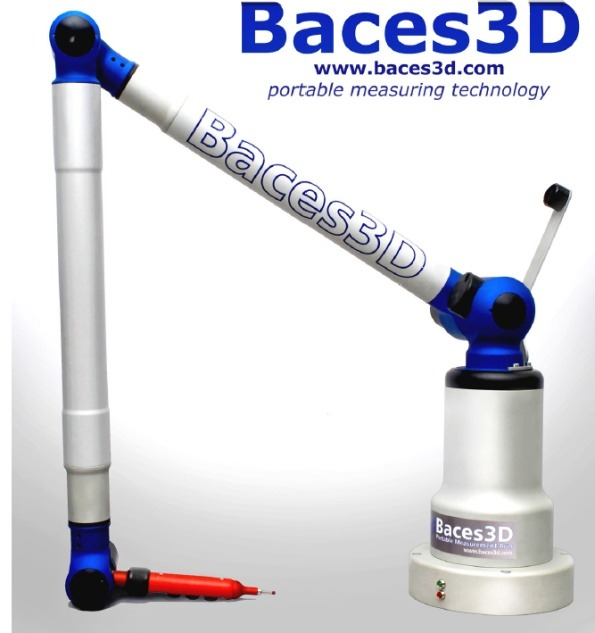
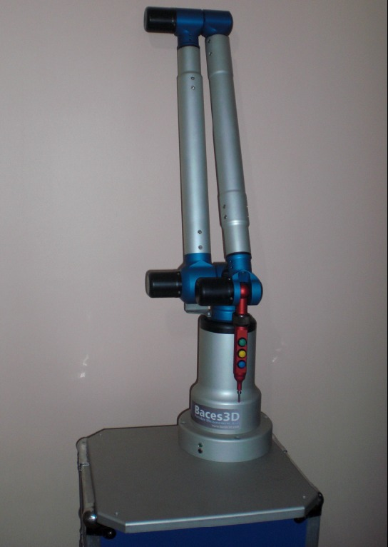
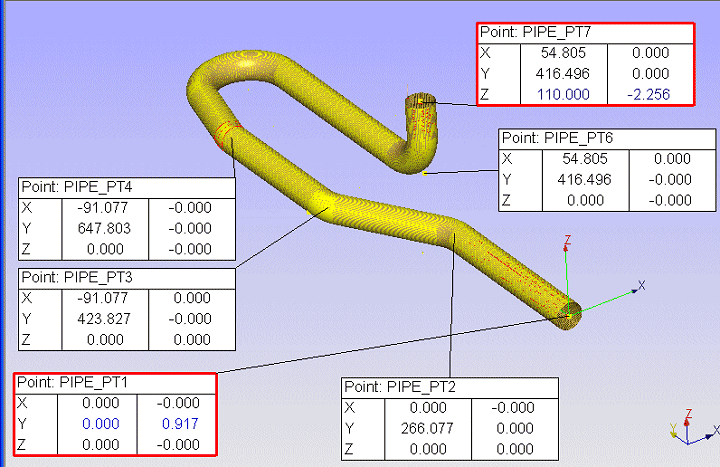
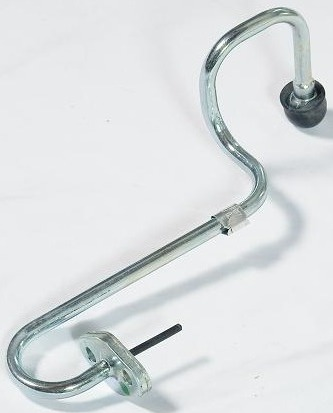
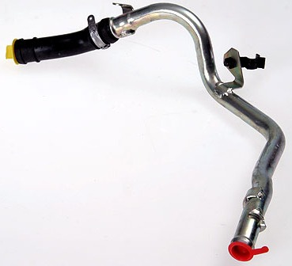
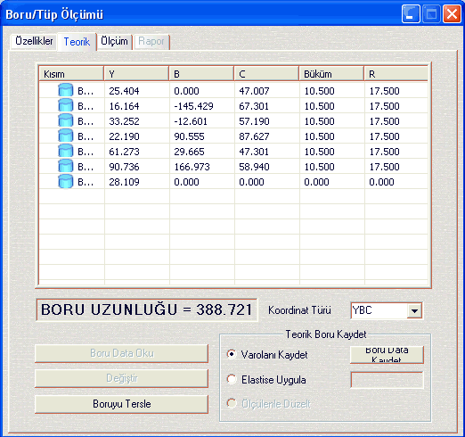
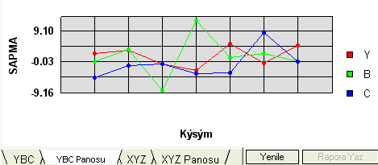
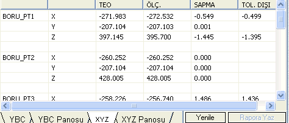
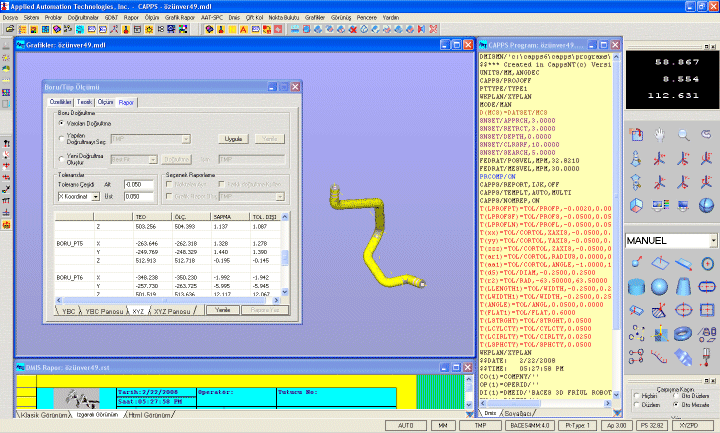
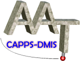

CAPPS DMIS PIPE yazýlýmý AAT Otomasyon Yazýlým firmasýnýn geliþtirdiði, CNC boru bükme makinesinde imal edilmiþ bükümlü borularýn ve tellerin fikstüre ihtiyaç duymadan kalite kontrolünü yapan bir yazýlýmdýr.
CNC boru bükme makinelerine girilen XYZ koordinat eksenleri veya YBC büküm parametreleri ile düz borular bükümlü hale gelmektedir. Yapýlan kontrol fikstürleri ile bükümlü borularýn kalite kontrolü yapýlmaktadýr. Maliyetli olan bu yöntemle birlikte boru ölçen portatif ölçüm kollarý mevcuttur."Çatal" tabir edilen aparatla borunun üzerinden veri toplayarak kalite kontrol yapýlmaktadýr.
Ýtalyan markasý olan Baces 3D Portatif Ölçme Kolu CAPPS- DMIS PIPE yazýlýmý ile bükümlü borularýn kalite kontrolü daha düþük maliyetle ve hýzlý olarak yapýlabilmektedir.

Hýzlý olmasýnýn sebebi problu sistemle boru etrafýndan silindir ve büküm yerlerinin seri olarak ölçülmesinden kaynaklanmaktadýr. Böylece pahalý kontrol fikstürlerine gerek kalmadan kalite kontrol yapýlmýþ olur. Diðer yandan, numune üzerinde bükülmüþ borunun tersine mühendisliði yapýlarak, CNC boru bükme makineleri girilecek YBC veya XYZ parametrelerini çýkararak imalat kýsmýna veri akýþý ile daha kýsa sürede imalata geçilmesi saðlanýr.
Diðer bir özellik borunun CAD modeli mevcut ise, sadece yazýlým üzerinden büküm parametrelerinin çýkarýlmasý saðlanýr ve imalata verilir. Normal prosedürde bükülmüþ boru ölçülerek CAD modeli ile karþýlaþtýrýlýr ve grafiksel olarak detaylý raporlanýr. Raporlama esnasýnda isteðe göre XYZ veya YBC parametresine göre raporlanmasýný yaný sýra, borunun doðrultmasý yazýlým tarafýndan otomatik olarak yapýlmaktadýr. Kullanýcý tarafýndan talep edilirse borunun deðiþik referans yerlerine göre kalite kontrol yapýlmasý da mümkündür.
Nasýl ölçülüyor?
Bükümlü boru sabitlenerek, baþlangýç yerinden bir nokta alýnýyor. Boru üzerindeki bükülmeyen yerler, CAPPS programýndan silindir olarak ölçülüyor. Borunun son yerinden bitiþ noktasý alýnýyor. Daha sonra borunun büküm yerlerinden sadece bir tanesi Torus olarak ölçülüyor. Böylece CAPPS programýnda gerçek numune üzerinden borunun büküm parametreleri elde ediliyor. Eðer teorik veriler veya CAD model mevcut ise, ayný sýra izlenerek direkt olarak karþýlaþtýrma yapýlýyor.


CAPPS DMIS yazýlýmý BACES portatif ölçme kolu ile satýlmakla beraber, herhangi bir markadaki KOORDÝNAT ÖLÇME CÝHAZINA (Brown & Sharpe, Coord3, Cheinwei, DEA, Dukin, Mitutoyo, LK, Wenzel, Poli, Trimek, Thome, NHLK, ...) adapte edilmesi mümkündür. Bu aþamda tezgahýn modernize edilmesi (RETROFIT) gerekmektedir. Diðer markalardaki Portatif Ölçme Kollarý (Faro, Cimcore, Romer) üzerinde adaptasyonu (UPGRADE) yapýlabilmektedir.
Aþaðýda detaylý olarak CAPPS DMIS PIPE modülünün özellikleri açýklanmýþtýr.
- Sonuçlarý grafiksel olarak ekranda görme
- Borunun elastisine göre büküm parametrelerini kaydetme
- XYZ veya YBC parametrelerini dosyadan okuma
- Otomatik olarak kendiliðinden doðrultma.
- Datalarý saklama ve tekrar ölçme.
- CAPPS menüsünde diðer menüleri kullanma.
- Ölçülen diðer elemanlarla ve boru arasýnda ölçüm yapabilme.
- Tüm geometrik toleranslandýrmalarý yapabilme.
- XYZ veya YBC koordinatlarýný girerek boru tasarýmý.
- CAD modelden boru parametrelerini çýkararak tasarlama.
- Numune parça üzerinden silindir ölçerek bir borunun tersine mühendisliði.
- Varolan boru datasý üzerine ekleme yapma veya deðiþtirme.
- YBC'den XYZ koordinatlarýna kadar borunun koordinat uyumluluðu.
- Tasarlanmýþ bir borunun ölçümü.
- Ölçülen bir borunun tasarým datalarýna göre otomatik doðrultulmasý.
- Borunun ölçüm raporlarýný oluþturma.
- XYZ ve YBC parametrelerini otomatik olarak birbirine dönüþtürme.
- XYZ teorik datalarýndan veya silindirlerden bir borunun konstrüksiyon tasarýmý.
 |
 |
Bükümlü boru örnekleri |




Büyük resim için týklayýnýz
CAPPS DMIS - CMM yazýlýmýna ait bir ekran görüntüsü
Firma hakkýnda:
Merkezi Amerika'da olan ve 2008 baþýnda Türkiye'de faaliyetine baþlayan AAT Otomasyon, koordinat ölçme cihazlarý için özel yazýlýmlar geliþtirmektedir. Bunun yaný sýra cihaz satýþý ve servisi faaliyetlerini ekleyen firmamýz Türkiye pazarýnda giderek büyümektedir. AAT ürünleri müþterilerine daha hýzlý ve daha kaliteli bir hizmetle sunmak için Türkiye'deki yapýlanmasýna devam etmektedir...
Daha fazla bilgi için:
Ýlker Teke
(533) 626 20 01
AAT Otomasyon Yazýlým Geliþtirme Eðitim Servis Hizm. Ltd. Þti.
bilgi@aat3d.com
www.aat3d.com
|